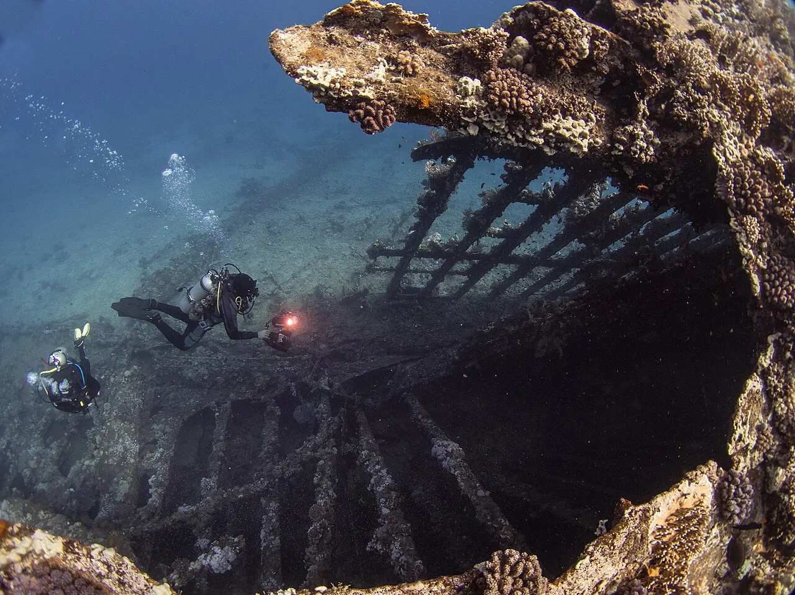

Sha’ab Abu Nuhas — épaves
Mer Rouge, Égypte · plongée

Récif triangulaire du nord de la mer Rouge, au nord-ouest de l’île de Shadwan, au large d’Hurghada. Il avance dans la route des cargos vers le canal de Suez et a piégé au moins sept navires. Divernet cite quatre épaves à plonger : le Giannis D (1983), le Carnatic (1869), le Chrisoula K, aussi appelé Marcus (1981), et le Kimon M (1978). On y va en bateau, à la journée ou en safari.
- Lieu
- Mer Rouge, Égypte
- Niveau
- Variable selon les conditions
- Activités
- plongée
- Type d'eau
- Mer / océan
- Coordonnées
- 27.57, 33.92 (position approximative du secteur)
Dangers à connaître
- Salle des machines du Chrisoula K : l’entrée est étroite et l’intérieur est extrêmement sombre (Divernet).
- Les épaves reposent de 12 à 32 m : le Carnatic à 26 m, le Chrisoula K entre 26 et 28 m, le Kimon M entre 30 et 32 m (Divernet).
- Le récif avance dans la route des cargos vers le canal de Suez (Wikipédia) : rejoins-le avec un bateau de plongée, pas seul.
Le conseil d'Ocean Buddy
Réserve avec un centre de plongée d’Hurghada. N’entre dans une épave qu’avec la formation adaptée, et prends trois lampes pour la salle des machines du Chrisoula K, comme le conseille Divernet. À Hurghada, la mer est à 23 °C en décembre et 22 °C en janvier (Wikipédia).
Ouvrir dans Ocean Buddy Télécharger sur l'App Store
Source : Fiche Ocean Buddy · décembre 2026 · d’après Divernet et Wikipédia · à vérifier localement.